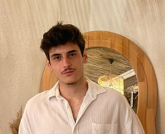

Hello, I'm
Orhan Akman
Assistant ERP Specialist at Akko
I work at the intersection of business processes and technology. I help companies run more efficiently with ERP systems, and I also design modern, user-friendly websites.
About Me
I am currently working as an Assistant ERP Specialist at Akko, where I support the company's ERP processes and help teams use the system more effectively. I hold an accounting certificate, which helps me understand the financial side of the processes I work on every day.
Before ERP, I gained experience in web design and web development. I always put user experience first and aim to build modern, functional and aesthetic solutions. My biggest motivation is combining technology and strategy to strengthen the digital success of brands and to make business processes more efficient.
My Presentation
Vocational English · with Emre KuzalHow One CPU Runs Many Programs: Context Switching
How does an operating system run many programs on one CPU? The answer is context switching: saving the state of one process and loading another, thousands of times per second.
Open presentation →Experience
-
Assistant ERP Specialist Current
Supporting ERP processes, helping users with daily operations and working on process efficiency together with the ERP team.
-
Web Designer
Worked on the web design of the company and gained valuable experience in corporate web projects.
-
Web Designer
My first work experience: I designed the website of one of the most fun workshop teams in Konya.
Education
-
Necmettin Erbakan University
-
Konya High School
Certificates
- Accounting Certificate
- Occupational Health and Safety Certificate
- Diction Training (partial)
- Body Language Training (partial)
Skills
Personal Skills
- Research
- Planning
- Presentation
- Time Management
- Management
- Listening
- Teamwork
- Determination
Technical Skills
- ERP Systems
- Accounting
- Web Design
- HTML & CSS
- C
- Python
Hobbies
- ⛺ Camping
- 🚴 Cycling
- 🏃 Running
- 🎭 Theatre
Latest Posts
From Web Design to ERP: My First Steps as an Assistant ERP Specialist
How I moved from designing websites to working with ERP systems, and what I learned along the way.
Read more → ERP & AccountingWhy Accounting Knowledge Matters in ERP
An ERP system is not only software. Behind every screen there is a financial process.
Read more → Web DesignLessons from Designing My First Website
What building a website for a workshop team in Konya taught me about users and design.
Read more →Contact
I am always open to new opportunities, projects and collaborations. Feel free to reach out.
References are available upon request.